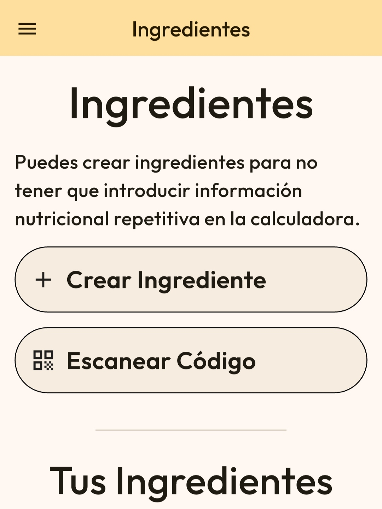
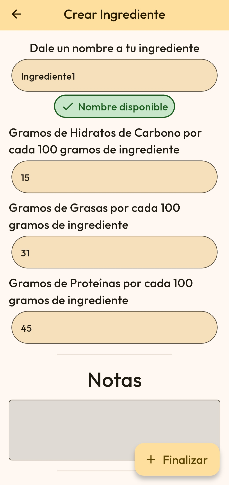
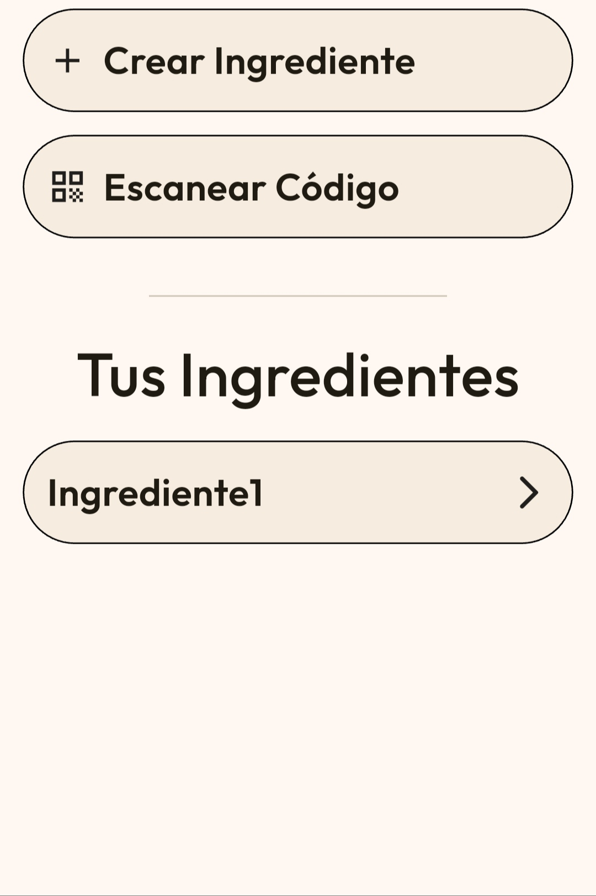
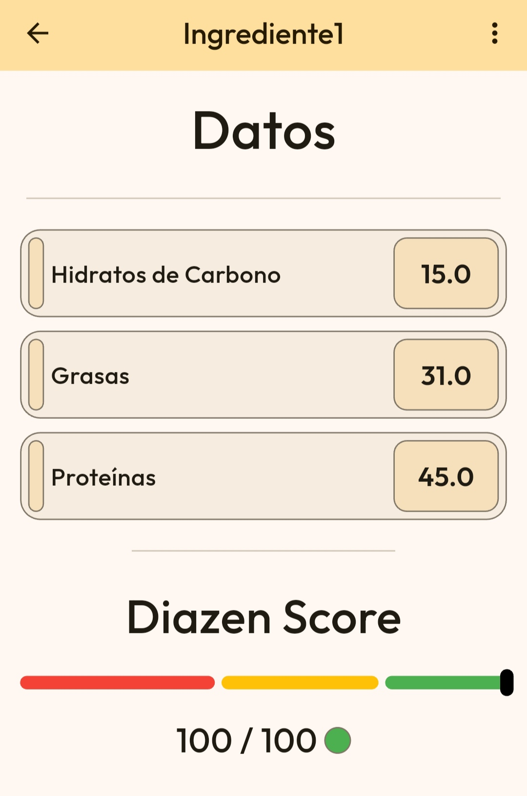
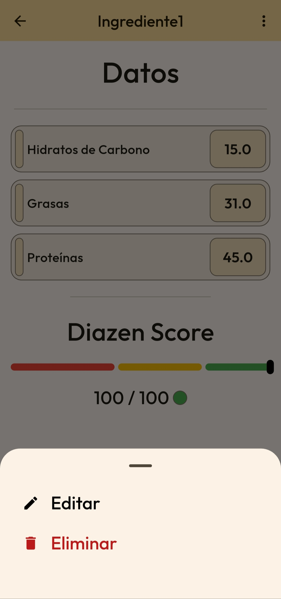
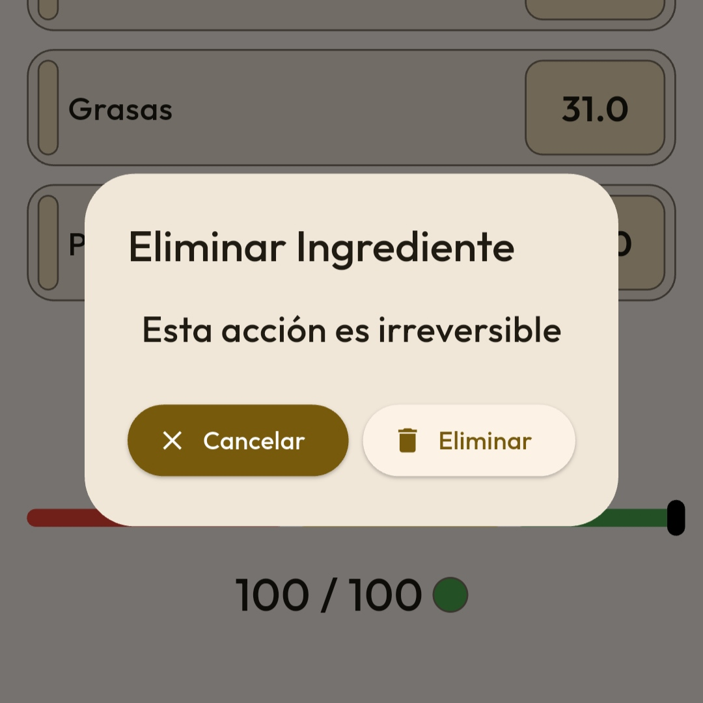
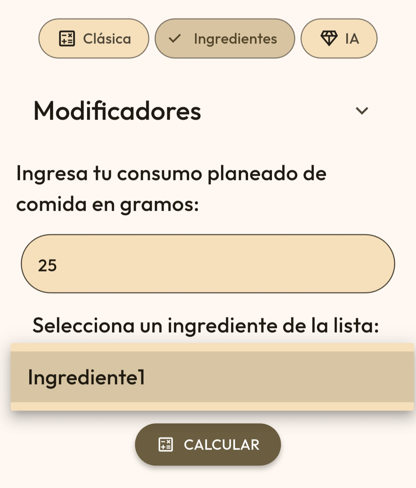
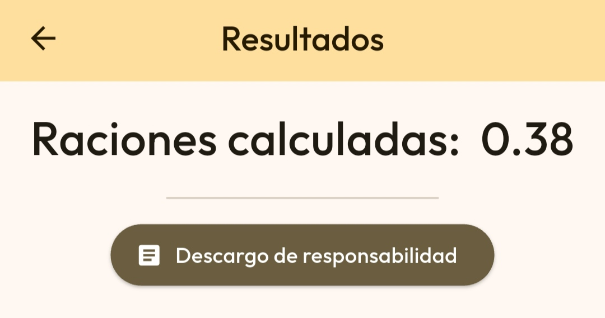

En Diazen, hay diferentes métodos para crear ingredientes. Se puede crear
desde cero o bien escanear el código de barras del ingrediente para añadirlo
automáticamente.
Para el primer caso, ve a la página de ingredientes y pulsa "Crear Ingrediente".


El ingrediente se añadirá a la lista de ingredientes. Si el ingrediente está siendo editado, la nueva información sobreescribirá la anterior.Una vez se tengan ingredientes creados, se pueden ver pulsando sobre el propio ingrediente. No hay límite de creación de ingredientes.

Se abrirá una nueva pantalla con la información creada sobre el ingrediente. Desde esta misma ventana se podrán editar y eliminar nuestros ingredientes.
Al hacer clic sobre un ingrediente se abrirá la ventana con la información del ingrediente. Ahora, puedes hacer clic en la esquina superior derecha, donde se abrirá una pantalla con diferentes opciones para nuestros ingredientes.

Al pulsar "Editar", se abrirá una ventana como la de creación de ingrediente. Puedes editar dicha información y pulsar "Finalizar" para guardarla o presionar en la esquina superior izquierda para cancelar el cambio.Al hacer clic sobre un ingrediente se abrirá la ventana con la información del ingrediente. Ahora, puedes hacer clic en la esquina superior derecha, donde se abrirá una pantalla con diferentes opciones para nuestros ingredientes. Puedes presionar el botón "Eliminar" para confirmar tu eliminación. Al pulsar "Eliminar", tu ingrediente se eliminará de la lista de ingredientes.

Si abrimos la Calculadora, veremos que en el apartado superior
hay un apartado denominado "Ingredientes". Puedes presionar sobre este apartado para transformar
el cálculo orientado a Ingredientes.
Puedes observar que ahora ya NO hay casillas para añadir información sobre los ingredientes, porque
esas casillas se auto completan al seleccionar un ingrediente de la lista de ingredientes, debajo
del apartado donde se agrega la cantidad de gramos a consumir.

Ahora, puedes pulsar "CALCULAR" tras rellenar la información. Recuerda que también puedes añadir todos los modificadores que desees.